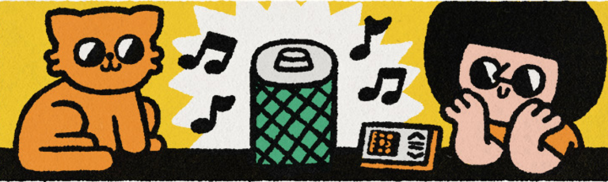

What is Product Design?
Product design is the process responsible for creating and developing a product and defining the scenarios in which it can interact with users. While a product typically refers to an online service, it can also be any other good on the market, such as medical equipment or a smart speaker. Product interaction scenarios link the product, its owners, and its consumers. Therefore, a product designer’s primary goal is to ensure that the product simplifies life, is convenient and aesthetically pleasing, creates value, and generates profit.

Ideally, the product should fulfill a need, be profitable, and be environmentally friendly.
The term "design" refers not only to the final result but also to the entire process. This means that designers’ role is to find solutions to specific problems, not just create aesthetically pleasing visuals. Therefore, we can broadly define design as the process of finding a solution to a problem that results in a tangible outcome. So, design applies to many fields, as it addresses a wide range of social and economic issues.
-
Industrial design focuses on the appearance and functionality of products such as automobiles, household appliances, and furniture.
-
Interior design aims to create a comfortable environment in residential, office, and other spaces.
-
Customer experience design involves creating and developing the overall experience for customers at every stage of their interaction with a company.
-
Urban environment design is essential for creating a convenient and comfortable living experience for city inhabitants.
In the design process, it’s crucial to remember the specific problem you’re solving and regularly ask yourself questions that will help you address it. Additionally, remember that your work should yield tangible results, whether it’s a sketch, a paper model, a project, or something else.

"As you turn your solution into a tangible layout, you start bringing it out of the realm of abstraction and into the real world."
Anastasya Popova
Head of product design at Alfa-Bank
What is Product Design for?
The overarching goal of product design is to create a more comfortable life for people while considering environmental sustainability. This means your final product should be more convenient, straightforward, and aesthetically pleasing. However, it’s important to remember that when working on commercial projects, profitability may sometimes conflict with these goals, and finding a compromise is essential. Businesses often pursue their objectives in the following ways:
-
Using spam that wastes valuable space and overwhelms users with its intrusiveness.
-
Covertly adding paid options, such as including insurance without notice when purchasing a ticket.
-
Misleading customers by presenting price increases as beneficial improvements.
-
Hiding overpayment by using deliberately complex billing methods.
-
Designing products with an unreasonably short lifespan.
Be prepared to face controversial decisions that you shouldn’t agree to without careful consideration. As a designer, you should prioritize user convenience and be ready to defend your ideas, as poor service can ultimately cost a business money. This doesn’t mean you should focus solely on the user and ignore the financial aspects—doing so could lead to your employer’s bankruptcy. Instead, strive to find a balance and seek out elegant solutions that satisfy both user needs and business goals.
What are The Components of Product Design?
Product design encompasses various areas: accurately defining the task, considering scenarios for interaction between the business and the client, and creating an outstanding design. Let me explain some of the key components:
-
Research
To accurately define the problem, develop hypotheses, test solutions, and gather comprehensive information from colleagues, clients, and other stakeholders.
-
Customer Experience
It’s essential to view processes from the client’s perspective to understand their decision-making motives and create unique value for them.
-
Information Architecture
Consider the organization’s existing structure and information architecture. This is crucial for building a flexible and efficient design system.
-
Business Analytics
Businesses launch new products, invest in design, and enhance customer experiences to attract new customers and increase their overall value. Monitoring and evaluating these efforts is essential.
It’s important to prioritize and develop the areas that will best support the project. Sometimes, research is necessary; other times, brainstorming or information analytics are more critical. Effective communication with stakeholders and systematically organizing information are also key to finding the right solution.
Product design is a relatively young discipline, and many companies may not fully understand the role of specialists in this field. How you approach and influence product development is up to you—so be proactive, take control of the outcome, and don’t hesitate to seek, propose, and defend your solutions.